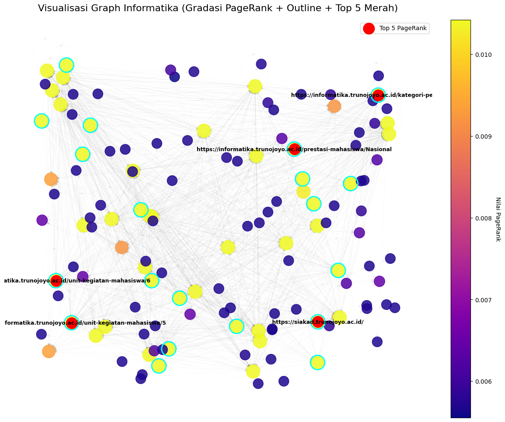

Page Rank#
Page Rank Contoh#
import networkx as nx
G = nx.DiGraph()
G.add_edges_from([(0, 1), (0, 2), (1, 2), (2, 0)])
pr = nx.pagerank(G, alpha=0.85)
print(pr)
{0: 0.387789442707259, 1: 0.21481051315058508, 2: 0.3974000441421556}
import numpy as np
def pagerank(adj_matrix, d=0.85, max_iter=100, tol=1e-6):
"""
Hitung PageRank dari matriks adjacency.
Parameters:
adj_matrix : array-like, shape (n, n)
Matriks adjacency (1 jika ada link i -> j)
d : float
Damping factor (default: 0.85)
max_iter : int
Maksimum iterasi
tol : float
Toleransi konvergensi
Returns:
r : ndarray, shape (n,)
Vektor PageRank
"""
adj = np.array(adj_matrix, dtype=float)
n = adj.shape[0]
# Tangani dangling nodes (baris dengan jumlah 0)
out_degree = np.sum(adj, axis=1)
for i in range(n):
if out_degree[i] == 0:
adj[i, :] = 1.0 # taut ke semua halaman
# Normalisasi baris → jadi matriks transisi (baris jumlah = 1)
# TAPI: PageRank asli menggunakan TRANSPOSE → aliran masuk
# Jadi kita transpos untuk membuat kolom = out-link
M = adj / np.sum(adj, axis=1, keepdims=True)
M = M.T # Sekarang M[j,i] = probabilitas dari i ke j
# Inisialisasi
r = np.ones(n) / n
teleport = (1 - d) / n
for _ in range(max_iter):
r_new = d * M @ r + teleport
if np.linalg.norm(r_new - r, 1) < tol:
break
r = r_new
return r
# Contoh penggunaan
if __name__ == "__main__":
# Graf: 0 → 1, 0 → 2, 1 → 2, 2 → 0
A = [
[0, 1, 1], # 0 links to 1 and 2
[0, 0, 1], # 1 links to 2
[1, 0, 0], # 2 links to 0
]
pr = pagerank(A)
print("PageRank:")
for i, score in enumerate(pr):
print(f"Node {i}: {score:.4f}")
PageRank:
Node 0: 0.3878
Node 1: 0.2148
Node 2: 0.3974
Page Rank Testing#
import pandas as pd
import networkx as nx
import matplotlib.pyplot as plt
import numpy as np
# === 1️⃣ Baca file edgelist ===
file_name = 'Data/web-Google_10k.txt'
try:
G = nx.read_edgelist(
file_name,
comments='#',
create_using=nx.DiGraph(),
nodetype=int
)
print(f"✅ Berhasil membaca file: {file_name}")
print(f"Jumlah node: {G.number_of_nodes()}")
print(f"Jumlah edge: {G.number_of_edges()}")
except FileNotFoundError:
print(f"❌ File '{file_name}' tidak ditemukan.")
except Exception as e:
print(f"Terjadi error saat membaca file: {e}")
# === 2️⃣ Hitung PageRank ===
pagerank = nx.pagerank(G, alpha=0.85)
pagerank_df = pd.DataFrame(list(pagerank.items()), columns=["Node", "PageRank"]).sort_values("PageRank", ascending=False)
# === 3️⃣ Ambil 5 node dengan PageRank tertinggi ===
top5_nodes = pagerank_df.head(5)["Node"].tolist()
print("\n🏆 Top 5 PageRank tertinggi:")
print(pagerank_df.head(5))
# === 4️⃣ Layout dan warna ===
np.random.seed(42) # agar warna konsisten tiap run
pos = nx.random_layout(G) # layout ringan untuk graf besar
node_colors = np.random.rand(len(G.nodes()), 3) # RGB acak untuk semua node
# === 5️⃣ Visualisasi ===
plt.figure(figsize=(18, 14))
# Semua node (warna-warni acak)
nx.draw_networkx_nodes(
G, pos,
node_size=8,
node_color=node_colors,
alpha=0.8
)
# 5 node penting (warna merah, ukuran besar)
nx.draw_networkx_nodes(
G, pos,
nodelist=top5_nodes,
node_color="red",
node_size=150,
label="Top 5 PageRank"
)
# Garis edge abu-abu muda agar tidak berat
nx.draw_networkx_edges(G, pos, width=0.25, alpha=0.15, arrows=False)
# Label hanya untuk 5 node penting
labels = {n: str(n) for n in top5_nodes}
nx.draw_networkx_labels(G, pos, labels=labels, font_color="black", font_size=9)
plt.title("Visualisasi Graph 10.000 Node (RGB Colors + 5 PageRank Tertinggi)", fontsize=16)
plt.legend(scatterpoints=1)
plt.axis("off")
plt.show()
✅ Berhasil membaca file: Data/web-Google_10k.txt
Jumlah node: 10000
Jumlah edge: 78323
🏆 Top 5 PageRank tertinggi:
Node PageRank
994 486980 0.006515
3849 285814 0.004633
113 226374 0.003301
2847 163075 0.003288
5214 555924 0.002756

Page Rank Menggunakan Data Link Keluaran Teknik Informatika#
# === BAGIAN 1: Import Library dan Baca File "semua_link_informatika.csv" ===
import pandas as pd
import networkx as nx
import matplotlib.pyplot as plt
import numpy as np
file_name = 'Data/semua_link_informatika.csv'
try:
# Baca file tanpa header
df = pd.read_csv(file_name, header=None)
# Buat graf berarah dari dua kolom pertama
G = nx.from_pandas_edgelist(
df,
source=0,
target=1,
create_using=nx.DiGraph()
)
print(f"✅ Berhasil membaca file: {file_name}")
print(f"Jumlah node: {G.number_of_nodes()}")
print(f"Jumlah edge: {G.number_of_edges()}")
except FileNotFoundError:
print(f"❌ File '{file_name}' tidak ditemukan. Pastikan file berada di folder 'Data/'.")
except Exception as e:
print(f"⚠️ Terjadi error saat membaca file: {e}")
✅ Berhasil membaca file: Data/semua_link_informatika.csv
Jumlah node: 1739
Jumlah edge: 1709
# === BAGIAN 2: Periksa isi dataset dan jumlah edge ===
edges = pd.read_csv(
file_name,
comment="#",
header=None,
names=["FromNodeId", "ToNodeId"],
engine="python",
sep=None, # auto deteksi delimiter
on_bad_lines="skip" # lewati baris rusak
)
edges = edges.dropna(subset=["FromNodeId", "ToNodeId"])
print(f"Jumlah edges: {len(edges)}")
print(edges.head())
Jumlah edges: 1709
FromNodeId \
No Page
1 https://informatika.trunojoyo.ac.id/
2 https://informatika.trunojoyo.ac.id/
3 https://informatika.trunojoyo.ac.id/
4 https://informatika.trunojoyo.ac.id/
ToNodeId
No Link Keluar
1 https://informatika.trunojoyo.ac.id/
2 https://informatika.trunojoyo.ac.id/bidang-min...
3 https://informatika.trunojoyo.ac.id/bidang-min...
4 https://informatika.trunojoyo.ac.id/bidang-min...
# === BAGIAN 3: Buat Graph dari edges ===
edges = edges.dropna(subset=["FromNodeId", "ToNodeId"])
try:
edges["FromNodeId"] = edges["FromNodeId"].astype(int)
edges["ToNodeId"] = edges["ToNodeId"].astype(int)
except:
pass # kalau bukan angka, biarkan string
G = nx.DiGraph()
G.add_edges_from(edges[["FromNodeId", "ToNodeId"]].values)
print(f"Jumlah node dalam graph: {G.number_of_nodes()}")
print(f"Jumlah edge dalam graph: {G.number_of_edges()}")
Jumlah node dalam graph: 133
Jumlah edge dalam graph: 1545
# === BAGIAN 4: Hitung PageRank dan cari node penting ===
pagerank = nx.pagerank(G, alpha=0.85, max_iter=100, tol=1e-06)
pagerank_df = (
pd.DataFrame(list(pagerank.items()), columns=["Node", "PageRank"])
.sort_values("PageRank", ascending=False)
.reset_index(drop=True)
)
print("🏆 Top 5 Node dengan PageRank Tertinggi:")
print(pagerank_df.head(5))
🏆 Top 5 Node dengan PageRank Tertinggi:
Node PageRank
0 https://siakad.trunojoyo.ac.id/ 0.010422
1 https://informatika.trunojoyo.ac.id/prestasi-m... 0.010422
2 https://informatika.trunojoyo.ac.id/kategori-p... 0.010422
3 https://informatika.trunojoyo.ac.id/unit-kegia... 0.010422
4 https://informatika.trunojoyo.ac.id/unit-kegia... 0.010422
# === CELL 5: Visualisasi Graph Informatika (Outline Warna Terang) ===
fig, ax = plt.subplots(figsize=(14, 12))
# Layout ringan (acak tapi cepat)
pos = nx.random_layout(G, seed=42)
# Warna node berdasarkan nilai PageRank (gradasi)
node_colors = [pagerank[n] for n in G.nodes()]
node_sizes = [v * 50000 for v in pagerank.values()]
# Top 5 & Top 20 node
top5_nodes = pagerank_df.head(5)["Node"].tolist()
top20_nodes = pagerank_df.head(20)["Node"].tolist()
top5_labels = {n: str(n) for n in top5_nodes}
# Gambar semua node (gradasi plasma)
nx.draw_networkx_nodes(
G, pos,
node_size=node_sizes,
node_color=node_colors,
cmap=plt.cm.plasma,
alpha=0.85,
ax=ax
)
# Outline BERWARNA untuk Top 20 (biar jelas!)
nx.draw_networkx_nodes(
G, pos,
nodelist=top20_nodes,
node_size=[pagerank[n]*55000 for n in top20_nodes],
node_color='none',
edgecolors="#00FFFF", # 💠 cyan terang — bisa diganti 'lime', 'orange', 'deepskyblue', dll
linewidths=2.0, # sedikit lebih tebal supaya kontras
ax=ax
)
# Node merah untuk Top 5 PageRank
nx.draw_networkx_nodes(
G, pos,
nodelist=top5_nodes,
node_color="red",
node_size=350,
label='Top 5 PageRank',
ax=ax
)
# Gambar edge
nx.draw_networkx_edges(G, pos, alpha=0.05, width=0.3, ax=ax)
# Label Top 5 node
nx.draw_networkx_labels(
G, pos,
labels=top5_labels,
font_color="black",
font_size=9,
font_weight="bold",
ax=ax
)
# Tambahkan colorbar
sm = plt.cm.ScalarMappable(
cmap=plt.cm.plasma,
norm=plt.Normalize(vmin=min(pagerank.values()), vmax=max(pagerank.values()))
)
sm.set_array([])
cbar = fig.colorbar(sm, ax=ax, fraction=0.046, pad=0.04)
cbar.set_label("Nilai PageRank", rotation=270, labelpad=15)
# Tampilan
ax.set_title(
"Visualisasi Graph Informatika (Gradasi PageRank + Outline + Top 5 Merah)",
fontsize=16, pad=15
)
ax.legend(scatterpoints=1, fontsize=10)
ax.axis("off")
plt.show()

Page Rank Menggunakan Data Link Berita#
# === BAGIAN 1: Import Library dan Baca File "tempo_links.csv" ===
import pandas as pd
import networkx as nx
import matplotlib.pyplot as plt
import numpy as np
file_name = 'Data/tempo_links.csv'
try:
# Baca file CSV tanpa header (diasumsikan 2 kolom: source & target)
df = pd.read_csv(file_name, header=None)
# Buat graf berarah dari dua kolom pertama
G = nx.from_pandas_edgelist(
df,
source=0,
target=1,
create_using=nx.DiGraph()
)
print(f"✅ Berhasil membaca file: {file_name}")
print(f"Jumlah node: {G.number_of_nodes()}")
print(f"Jumlah edge: {G.number_of_edges()}")
except FileNotFoundError:
print(f"❌ File '{file_name}' tidak ditemukan. Pastikan file berada di folder 'Data/'.")
except Exception as e:
print(f"⚠️ Terjadi error saat membaca file: {e}")
✅ Berhasil membaca file: Data/tempo_links.csv
Jumlah node: 947
Jumlah edge: 901
# === BAGIAN 2: Periksa isi dataset dan jumlah edge ===
edges = pd.read_csv(
file_name,
comment="#",
header=None,
names=["FromNodeId", "ToNodeId"],
engine="python",
sep=None, # auto deteksi delimiter
on_bad_lines="skip" # lewati baris rusak
)
edges = edges.dropna(subset=["FromNodeId", "ToNodeId"])
print(f"Jumlah edges: {len(edges)}")
print(edges.head())
Jumlah edges: 901
FromNodeId \
id_berita page
2068892 https://www.tempo.co/indeks?page=1&category=ru...
2068883 https://www.tempo.co/indeks?page=1&category=ru...
2068882 https://www.tempo.co/indeks?page=1&category=ru...
2068873 https://www.tempo.co/indeks?page=1&category=ru...
ToNodeId
id_berita link_keluar
2068892 https://www.tempo.co/politik/gerindra-anggap-s...
2068883 https://www.tempo.co/politik/roy-suryo-ungkap-...
2068882 https://www.tempo.co/politik/fadli-zon-digugat...
2068873 https://www.tempo.co/politik/jusuf-kalla-tuntu...
# === BAGIAN 3: Buat Graph dari edges ===
edges = edges.dropna(subset=["FromNodeId", "ToNodeId"])
try:
edges["FromNodeId"] = edges["FromNodeId"].astype(str)
edges["ToNodeId"] = edges["ToNodeId"].astype(str)
except:
pass
# Buat graph berarah
G = nx.DiGraph()
G.add_edges_from(edges[["FromNodeId", "ToNodeId"]].values)
print(f"Jumlah node dalam graph: {G.number_of_nodes()}")
print(f"Jumlah edge dalam graph: {G.number_of_edges()}")
Jumlah node dalam graph: 947
Jumlah edge dalam graph: 901
# === BAGIAN 4: Hitung PageRank dan Temukan Node Penting ===
pagerank = nx.pagerank(G, alpha=0.85, max_iter=100, tol=1e-06)
pagerank_df = (
pd.DataFrame(list(pagerank.items()), columns=["Node", "PageRank"])
.sort_values("PageRank", ascending=False)
.reset_index(drop=True)
)
print("🏆 Top 5 Node dengan PageRank Tertinggi:")
print(pagerank_df.head(5))
🏆 Top 5 Node dengan PageRank Tertinggi:
Node PageRank
0 link_keluar 0.001875
1 https://www.tempo.co/hiburan/aturan-baru-tsa-m... 0.001057
2 https://www.tempo.co/internasional/kecelakaan-... 0.001057
3 https://www.tempo.co/internasional/trump-ganti... 0.001057
4 https://www.tempo.co/internasional/mengapa-as-... 0.001057
# === BAGIAN 5: Visualisasi Graph Tempo ===
fig, ax = plt.subplots(figsize=(14, 12))
# Layout ringan agar cepat (acak tapi stabil)
pos = nx.random_layout(G, seed=42)
# Warna node berdasarkan nilai PageRank
node_colors = [pagerank[n] for n in G.nodes()]
node_sizes = [v * 50000 for v in pagerank.values()]
# Ambil node penting
top5_nodes = pagerank_df.head(5)["Node"].tolist()
top20_nodes = pagerank_df.head(20)["Node"].tolist()
top5_labels = {n: str(n) for n in top5_nodes}
# Gambar semua node (gradasi plasma)
nx.draw_networkx_nodes(
G, pos,
node_size=node_sizes,
node_color=node_colors,
cmap=plt.cm.plasma,
alpha=0.85,
ax=ax
)
# Outline warna mencolok untuk Top 20 node
nx.draw_networkx_nodes(
G, pos,
nodelist=top20_nodes,
node_size=[pagerank[n]*55000 for n in top20_nodes],
node_color='none',
edgecolors='lime', # 🌟 outline warna hijau neon biar jelas
linewidths=2.2,
ax=ax
)
# Node merah solid untuk Top 5 node tertinggi
nx.draw_networkx_nodes(
G, pos,
nodelist=top5_nodes,
node_color='red',
node_size=350,
label='Top 5 PageRank',
ax=ax
)
# Edge halus
nx.draw_networkx_edges(G, pos, alpha=0.05, width=0.3, ax=ax)
# Label hanya untuk 5 node tertinggi
nx.draw_networkx_labels(
G, pos,
labels=top5_labels,
font_color='black',
font_size=9,
font_weight='bold',
ax=ax
)
# Colorbar skala PageRank
sm = plt.cm.ScalarMappable(
cmap=plt.cm.plasma,
norm=plt.Normalize(vmin=min(pagerank.values()), vmax=max(pagerank.values()))
)
sm.set_array([])
cbar = fig.colorbar(sm, ax=ax, fraction=0.046, pad=0.04)
cbar.set_label("Nilai PageRank", rotation=270, labelpad=15)
# Tampilan
ax.set_title(
"Visualisasi Graph Tempo (Gradasi PageRank + Outline Lime + Top 5 Merah)",
fontsize=16, pad=15
)
ax.legend(scatterpoints=1, fontsize=10)
ax.axis("off")
plt.show()
/home/codespace/.local/lib/python3.12/site-packages/IPython/core/pylabtools.py:170: UserWarning: Creating legend with loc="best" can be slow with large amounts of data.
fig.canvas.print_figure(bytes_io, **kw)